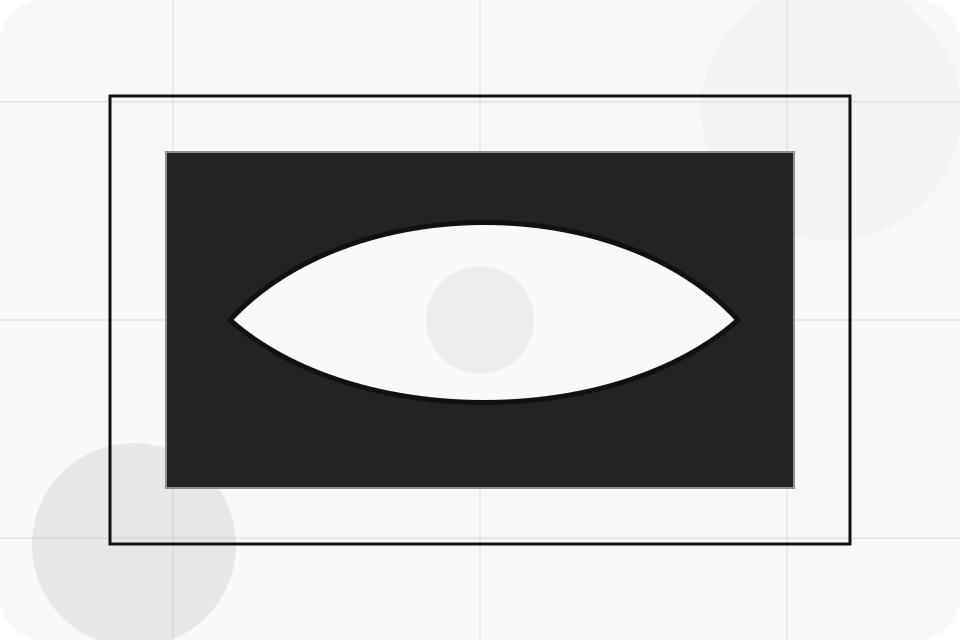
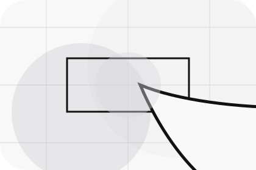
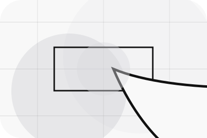
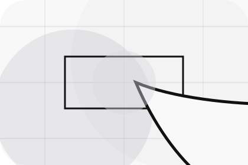
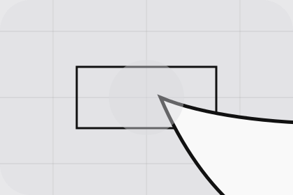

Best Fit
Who should use inventory and when it belongs in the vehicles journey.
Vehicles / 01
Vehicles opens as a clear automotive decision hub: what Motor offers, who it helps, why it matters, and which route to take first.
The first screen combines positioning, proof, primary action, and fast internal navigation, so people can act immediately or compare the rest of the vehicles route with context.
Stark vehicle product hero
Select the closest route and Motor keeps the next step, proof, and follow-up expectation aligned with purchase confidence and desire.

Vehicles / 02
Inventory explains the practical scope, best-fit situations, and expected outcome so automotive visitors can compare options without decoding jargon.
The section keeps the offer concrete: what is included, who it is best for, what decision it supports, and which linked route gives the deeper detail.
Explore VehiclesWho should use inventory and when it belongs in the vehicles journey.
The practical benefit visitors should expect after choosing this route.
Where to compare details, pricing, support, or contact options before committing.
Vehicles / 03
New explains the practical scope, best-fit situations, and expected outcome so automotive visitors can compare options without decoding jargon.
The section keeps the offer concrete: what is included, who it is best for, what decision it supports, and which linked route gives the deeper detail.
Explore Vehicles

Who should use new and when it belongs in the vehicles journey.
Vehicles / 04
Used explains the practical scope, best-fit situations, and expected outcome so automotive visitors can compare options without decoding jargon.
The section keeps the offer concrete: what is included, who it is best for, what decision it supports, and which linked route gives the deeper detail.
Explore VehiclesWho should use used and when it belongs in the vehicles journey.
The practical benefit visitors should expect after choosing this route.
Where to compare details, pricing, support, or contact options before committing.
Vehicles / 05
Electric explains the practical scope, best-fit situations, and expected outcome so automotive visitors can compare options without decoding jargon.
The section keeps the offer concrete: what is included, who it is best for, what decision it supports, and which linked route gives the deeper detail.
Explore VehiclesWho should use electric and when it belongs in the vehicles journey.
The practical benefit visitors should expect after choosing this route.
Where to compare details, pricing, support, or contact options before committing.
Vehicles / 06
Specs explains the practical scope, best-fit situations, and expected outcome so automotive visitors can compare options without decoding jargon.
The section keeps the offer concrete: what is included, who it is best for, what decision it supports, and which linked route gives the deeper detail.
Explore VehiclesMotor structures specs around best fit, what changes, and a clear next route so visitors can compare the block quickly before they book a test drive.
Book Test DriveVehicles / 08
Availability explains the practical scope, best-fit situations, and expected outcome so automotive visitors can compare options without decoding jargon.
The section keeps the offer concrete: what is included, who it is best for, what decision it supports, and which linked route gives the deeper detail.
Explore VehiclesWho should use availability and when it belongs in the vehicles journey.
The practical benefit visitors should expect after choosing this route.

Where to compare details, pricing, support, or contact options before committing.
Vehicles / 09
Compare explains the practical scope, best-fit situations, and expected outcome so automotive visitors can compare options without decoding jargon.
The section keeps the offer concrete: what is included, who it is best for, what decision it supports, and which linked route gives the deeper detail.
Explore VehiclesWho should use compare and when it belongs in the vehicles journey.
The practical benefit visitors should expect after choosing this route.
Where to compare details, pricing, support, or contact options before committing.
Vehicles / 10
Motor closes the vehicles route with a clear action, a quick reminder of the value, and a low-friction way to book a test drive.
Visitors who are ready can use the primary action. Visitors who are still comparing can scan the section links, proof, and support routes before they book a test drive.
Book Test DriveThe final block keeps the choice simple: act now, compare one more proof route, or send enough detail for a focused response.
Book Test Drivepurchase confidence and desire
A vehicle showroom site with precise white space, car-card rhythm, finance paths, and test-drive CTAs. Vehicles ends with a direct path to book a test drive, plus enough context for visitors who still need to compare.

Book Test DriveInformation is provided for planning and should be reviewed for the final client, location, and operating rules.